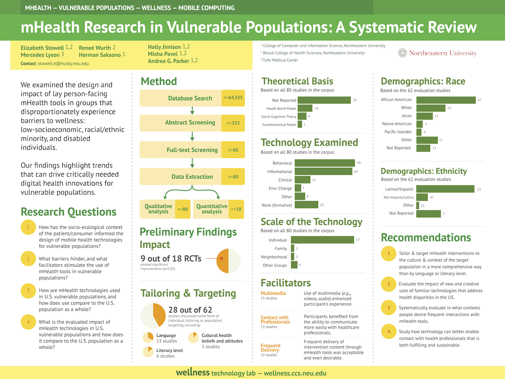
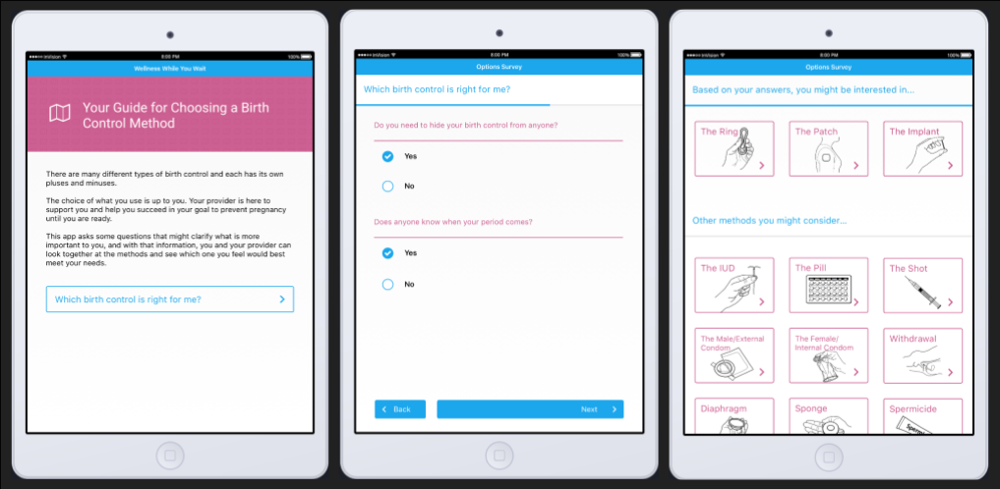
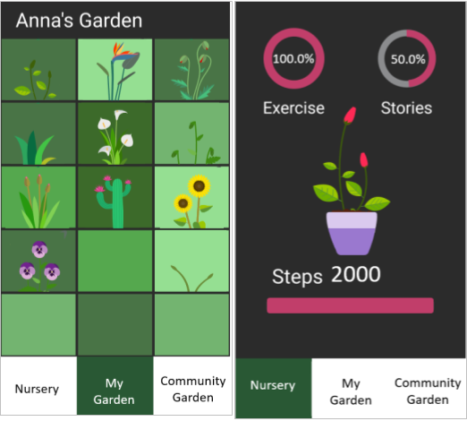

Elizabeth Stowell
Ongoing Work
-
Health Ministry: Smart and Connected Communities
Churches play a major role in providing social support to address health inequities within various communities in United States, in part by connecting church members to services. While public health has a history of disseminating interventions in faith communities, little work has explored how technologies can be used to tailor interventions to the unique culture of each church community. Following Community Based Participatory Research principles, we partnered with predominantly African-American churches, to develop and evaluate an mHealth intervention.

-
#MeToo: The Networked Disclosure Landscape of Twitter

Following a tweet from actress Alyssa Milano which called on women to share the phrase “me too” if they have been sexually harassed or assaulted, thousands of women disclosed experiences of sexual violence, sometimes for the first time, through the hashtag #MeToo. To understand the landscape painted by these disclosures and the effect of disclosing these experiences publicly, we study the conversational social network that emerged around the #MeToo.
-
mHealth Systematic Review
There has been a proliferation of research examining how mobile health (mHealth) applications can encourage wellness. A growing focus of this work has been the exploration of how mHealth tools can promote healthy behaviors within vulnerable populations. We conducted a systematic review of such research, examining the design and impact of mHealth tools for low-socioeconomic individuals and racial/ethnic minority groups. Our findings highlight trends that can drive critically needed digital innovations in health promotion for populations that experience disproportionate barriers to wellness.
 -
Contraception Decision Aid
During Summer 2016, I worked with local health center to develop a prototype of a contraception decision aid. More info here.
 -
Digital Support for Alzheimer’s Disease Caregivers
The number of informal caregivers who are supporting family members with Alzheimer’s Disease (AD) is rising dramatically. These caregivers have numerous mental and physical health problems associated with the burdens of care. In this project, we are developing a digital game to increase physical activity and social connections for the AD caregivers.
 -
Ambient Technology to Support Healthy Aging
While working as a research fellow in the hciLab at the University of Stuttgart, I collaborated on a project on the development of a smart calendar system to support healthy aging. We explored how ambient and adaptive notification can encourage healthy behaviors and support cognitive function.
-
Visualization of Personal Genomic Data
While working as a research fellow in the Wellesley College Human Computer Interaction Laboratory, I collaborated on a project on visualization of personal genomic data. We explored how next generation technology can facilitate the learning of complex scientific concepts. I worked on genome visualization and consent form visualization research in collaboration with the Harvard Personal Genome Project.